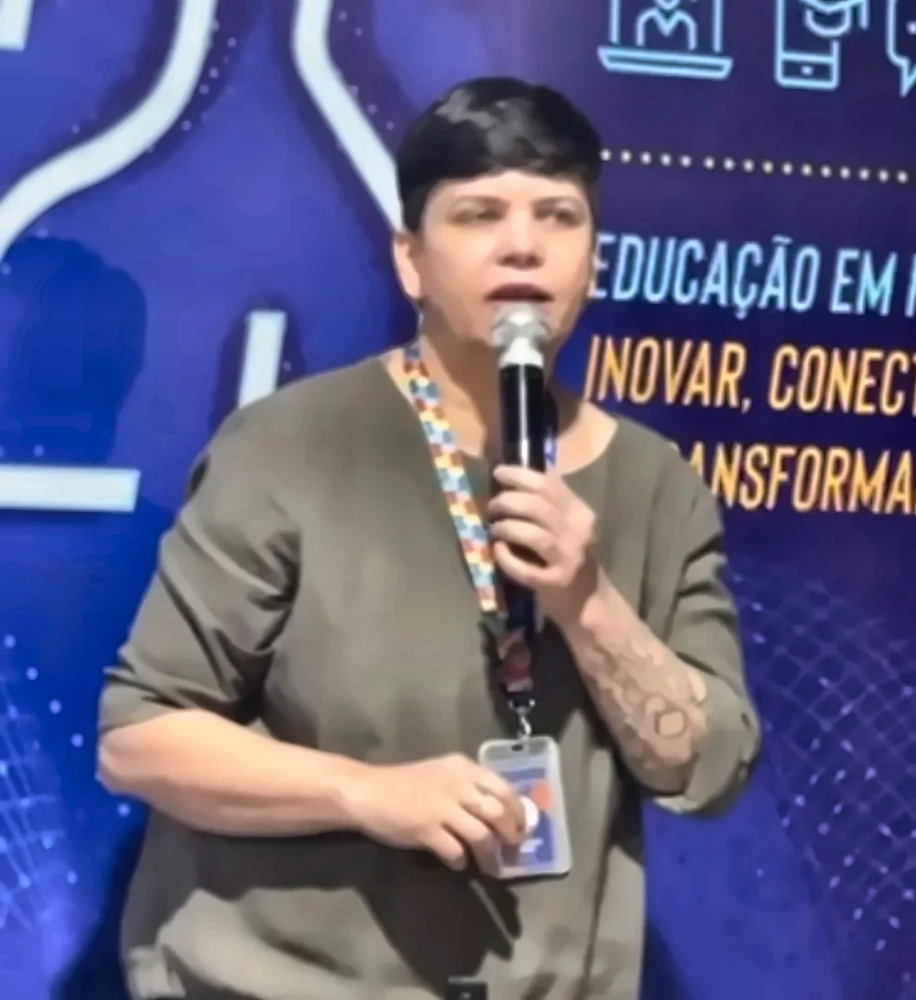

U1 · núcleo da placa
Maristela
ou só Stela. Professora de TI.
Ligo hardware, software e gente. O resto é trilha. Sigo construindo a minha e ajudo meus alunos a traçarem as deles.

Do It Yourself, desde sempre

Entrei na tecnologia pelas telecomunicações e nunca achei a porta de saída. Há 12 anos ensino no Senac DF. Hoje estou na Faculdade de Tecnologia e Inovação, nos cursos de ADS, Segurança da Informação, Gestão de TI e Inteligência Artificial.
Se eu não sei fazer, aprendo. Foi assim com desenho, escultura, marcenaria, elétrica e até com a minha primeira casa, que ajudei a levantar. Um projeto com ESP32 ou Arduino é onde tudo isso se encontra.
Minha mente não tem modo de economia de energia.
Em sala, meus alunos viram filhotes. Ensino do jeito que aprendo: com a mão na massa e espaço para errar sem medo.

Onde tudo começou, e para onde a trilha segue
Técnica em Telecomunicações
TP1stelaOnde tudo começou.
Tecnóloga em Análise e Desenvolvimento de Sistemas
TP2stelaUniversidade Católica de Brasília. Hoje dou aula no mesmo curso.
Cinco especializações
TP3stela- Machine Learning e Inteligência Artificial
- Segurança da Informação
- Projetos de Cloud Computing
- Programação Fullstack
- Docência para a Educação Profissional e Tecnológica
Certificações
TP4stelaLista a completar: Microsoft, Cisco e outras.
Engenharia da Computação e Ciência da Computação
em andamentostela · TP5Velocidade de clock limitada pela agenda.
Tudo ligado a um chip central
IoT
Onde hardware, software, conectividade e nuvem se encontram.
Programação
Python e JavaScript, minhas favoritas. PHP, HTML e CSS. Git e GitHub.
Bancos de dados
PostgreSQL, MySQL e SQLite.
Nuvem
AWS e Azure, com foco em segurança em nuvem.
Redes e infraestrutura
Cisco, CCNA e administração de recursos computacionais.
IA e segurança
Machine Learning, uso consciente de IA e Segurança da Informação.
Eletrônica
ESP32, Arduino, eletricidade e arte com sucata eletrônica.
Docência
Sites didáticos, NetAcad, AWS Academy, Microsoft Learn, Teams e Moodle.
Pessoas
Inclusão, neurodiversidade e formação de professores.
Cursos e turmas
Cada disciplina tem o seu próprio site, com aulas, atividades e materiais. Os sites estão sendo reconstruídos com este visual.
Preparatórios de certificação abertos ao público
Análise e Desenvolvimento de Sistemas
Segurança da Informação
Palestras
Formação para professores do Senac DF sobre as ferramentas Microsoft do nosso domínio: Teams, Loop, Whiteboard e Copilot no dia a dia da docência.
Data e outras palestras a completar.
Cada cérebro tem a sua própria arquitetura
Apoio alunos e professores no tema da neurodivergência: autismo, altas habilidades, TDAH, processamento auditivo e ansiedade. Ajudo a pensar adaptações em sala, a entender direitos e a encontrar informação confiável.
Acredito que uma aula boa para quem é neurodivergente é melhor para todo mundo: instruções escritas, combinados claros, previsibilidade e espaço para errar sem medo.
Materiais de apoio para alunos e professores em breve.
Este site foi feito pensando nisso
- Fonte Atkinson Hyperlegible, criada para facilitar a leitura.
- Botão para aumentar o texto, no topo da página.
- Botão para pausar animações, que também respeita a configuração do seu sistema.
- Tema escuro ou claro, no botão do topo.
- Menu e estrutura iguais em todos os sites das disciplinas.
- Textos em blocos curtos, com contraste confortável.
Arte com sucata eletrônica
Placas, CIs e componentes que iam para o lixo viram peças novas.